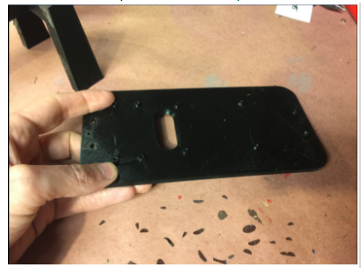
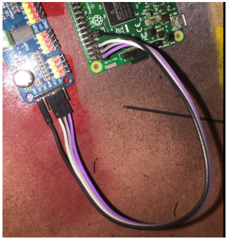
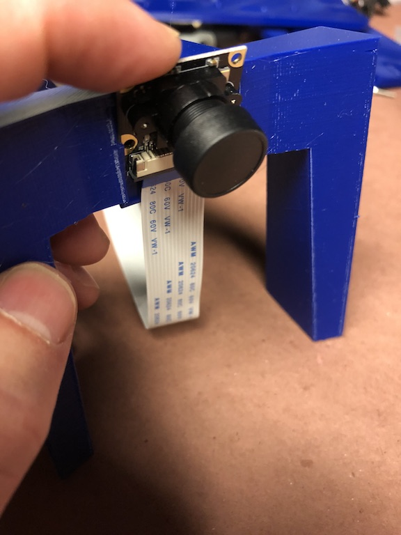
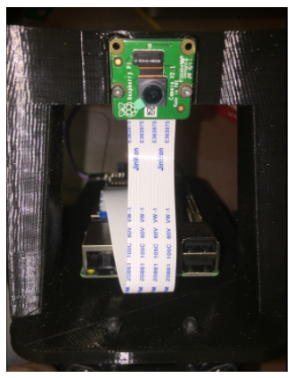
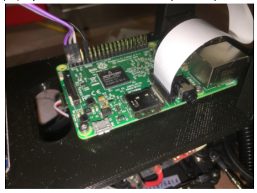
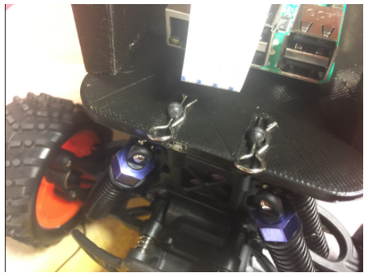
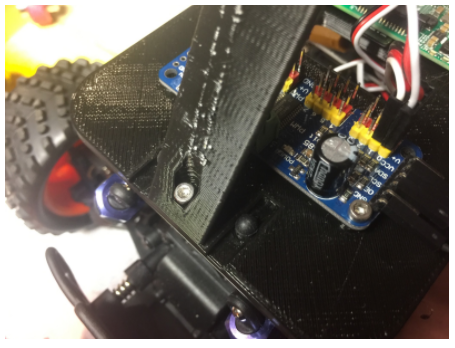

How to Build a Donkey®
- Overview
- Parts Needed
- Hardware:
- Step 1: Print Parts
- Step 2: Clean up parts
- Step 3: Assemble Top plate and Roll Cage
- Step 4: Connect Servo Shield to Raspberry Pi
- Step 5: Attach Raspberry Pi to 3D Printed bottom plate
- Step 6: Attach Camera
- Step 7: Put it all together
- Software
Overview
The latest version of the software installation instructions are maintained in the software instructions section. Be sure to follow those instructions after you've built your car.
Choosing a Car
There are two main options for cars pre-assembled or assemble yourself. The assemble yourself version is relatively easy to do, gives you a higher performance vehicle and is much more customizable.
If you want a pre-assembled car, we recommend the Waveshare Piracer Pro, which comes with a Raspberry Pi 4 and everything else you need. Although it comes with outdated Donkeycar software, you can easily upgrade it to the latest version by following the instructions here.
If you want to build a car follow these instructions below.
To build a car, you first need to choose a car. A donkey car can be made out of almost any RC car, however if you want to follow an easy path buy either the WL Toys car listed below or the Exceed one.
NOTE: only the WL Toys 144010 and HSP-94186 are readily avilable rignt now
The WL Toys 144010 is probably the easiest car to get right now. It has a brushless motor, which makes it fast, but takes some getting used to for beginners. There are brushed motor versions of theis car the 144011 and 144001 but both require the user to replace both the steering servo and ESC with these parts ESC and Servo. Only do this if you are familiar with RC or enjoy tinkering. Here is a short video explaining how to assemble the car. You can find the adapters in Thingiverse and print them yourself or go to a 3rd party printing service.
The alterate car, which often has slighly less availability is the HSP 94186 and the "Exceed" brand cars. There are 5 supported cars, all are very similar and should be considered equivalent. Note, often some of these are out of stock, so go through the links to find one that is in stock. If they are out of stock on Amazon, you can find the cars at the Exceed Website. The HSP-94186 is identical to the Exceed Magnet 1/16 Truck; it can be found on AliExpress but takes about a month to get to the US, there are local options that charge a premium.
These cars are electrically identical but have different tires, mounting and other details. It is worth noting that the Desert Monster, Short Course Truck and Blaze all require adapters which can be easily printed or purchased from the donkey store. These are the standard build cars because they are mostly plug and play, both have a brushed motor which makes training easier, they handle rough driving surfaces well and are inexpensive.
Here is a video overview of the different cars (Excluding the WL Toys car) and how to assemble them.
For advanced users there are 2 more cars supported under the "Donkey Pro" name. These are 1/10 scale cars which means that they are bigger, perform a little better and are slightly more expensive. They can be found here:
- HobbyKing Mission-D found here
- Tamaya TT01 or Clone commonly used knockoff found here - found worldwide but usually has to be built as a kits. The other two cars are ready to be donkified, this one, however is harder to assemble.
Here is a video that goes over the different models. The Donkey Pro models are not yet very well documented, just a word of warning.
For more detail and other options, follow the link to: supported cars
Roll Your Own Car
Alternatively If you know RC or need something the standard Donkey does not support, you can roll your own. Here is a quick reference to help you along the way. Roll Your Own
Video Overview of Hardware Assembly
This video covers how to assemble a standard Donkey Car, it also covers the Sombrero, the Raspberry Pi and the nVidia Jetson Nano.
Parts Needed
The following instructions are for the Raspberry Pi, below in Optional Upgrades section, you can find the NVIDIA Jetson Nano instructions.
| Part Description | Link | Approximate Cost |
|---|---|---|
| Magnet Car or alternative | see cars above under 'choosing a car' | $92 |
| M2x6 screws (8) | Amazon | $4.89 * |
| M3x10 screws (3) | Amazon | $7.89 * |
| USB Battery | Anker 10,000 maH | $26 |
| Raspberry Pi 5B 8GB | Pi 5B | $60 |
| MicroSD Card | 64GB | $18.99 |
| Wide Angle Raspberry Pi Camera | Amazon | $16 |
| Female to Female Jumper Wire | Amazon) | $7 * |
| Servo Driver PCA 9685 | Amazon | $12 ** |
| 3D Printed roll cage and top plate. | Print yourself, or go to a 3rd party service | $xx |
* If it is hard to find these components, there is some wiggle room. Instead of an M2 you can use an M2.2, m2.3 or #4 SAE screw. Instead of an M3 a #6 SAE screw can be used. Machine screws can be used in a pinch.
** This component can be purchased from Ali Express for ~$2-4 if you can wait the 30-60 days for shipping.
Optional Upgrades
- LiPo Battery and Accessories: LiPo batteries have significantly better energy density and have a better dropoff curve. See below (courtesy of Traxxas).
| Part Description | Link | Approximate Cost |
|---|---|---|
| LiPo Battery | hobbyking.com/en_us/turnigy-1800mah-2s-20c-lipo-pack.html or amazon.com/gp/product/B0072AERBE/ | $8.94 to $~17 |
| Lipo Charger (takes 1hr to charge the above battery) | charger | $13 |
| Lipo Battery Case (to prevent damage if they explode) | lipo safe | $8 |
Hardware
If you purchased parts from the Donkey Car Store, skip to step 3.
Step 1: Print Parts
If you do not have a 3D Printer, you can order parts from Donkey Store. I printed parts in black PLA, with 2mm layer height and no supports. The top roll bar is designed to be printed upside down. Remember that you need to print the adapters unless you have a "Magnet"
I printed parts in black PLA, with .3mm layer height with a .5mm nozzle and no supports. The top roll bar is designed to be printed upside down.
Step 2: Clean up parts
Almost all 3D Printed parts will need clean up. Re-drill holes, and clean up excess plastic.

In particular, clean up the slots in the side of the roll bar, as shown in the picture below:

Step 3: Assemble Top plate and Roll Cage
If you have an Exceed Short Course Truck, Blaze or Desert Monster watch this video
This is a relatively simple assembly step. Just use the 3mm self tapping screws to scew the plate to the roll cage.
When attaching the roll cage to the top plate, ensure that the nubs on the top plate face the roll-cage. This will ensure the equipment you mount to the top plate fits easily.
Step 4: Connect Servo Shield to Raspberry Pi
The PCA9685 Servo controller can control up to 16 PWM devices like servos, motor controllers, LEDs or almost anything that uses a PWM signal. It is connected to the RaspberryPi (or Jetson Nano) 40 pin GPIO bus via the I2C pins.
- GPIO I2C bus 1
- SDA is board pin 03
- SCL is board pin 05
- Wiring
- SDA and SCL may be through a shared bus rather than a direct connection between nano and PCA9685 if other devices are using the I2C bus (like an OLED display)
- 3.3v VCC power may be provided by a 3.3v pin on the GPIO bus (typically board pin 01).
- 5v VIN should NOT be provided by the GPIO bus because motors/servos may draw too much power. Most Electronic Speed Controllers actually provide the necessary power via the 3 pin cables that get plugged into the PCA9685, so it is generally not necessary to provide power directly to VIN.
- All GND must be common ground. On the GPIO it is usually easiest to use GPIO board pin 09 for ground. Once again the 3 pin cables from the ESC carry ground and the PCA9685 connects this to the GPIO via the GND pin.
---
GPIO ... PCA9685 ... 5v ... ESC ... Servo
3v3-01 <---> VCC
pin-03 <---> SDA
pin-05 <---> SCL
GND-09 <---> GND
VIN <---> 5v optional, see above
GND <---> GND
CH-0 <---------> ESC
CH-1 <------------------> Servo
---
- checking connections
- The PCA9685 should appear on I2C bus 1 at address 0x40
- ssh into the Donkeycar and use i2cdetect to read bus 1. A device should exist at address 0x40
---
$ i2cdetect -y -r 1
0 1 2 3 4 5 6 7 8 9 a b c d e f
00: -- -- -- -- -- -- -- -- -- -- -- -- --
10: -- -- -- -- -- -- -- -- -- -- -- -- -- -- -- --
20: -- -- -- -- -- -- -- -- -- -- -- -- -- -- -- --
30: -- -- -- -- -- -- -- -- -- -- -- -- -- -- -- --
40: 40 -- -- -- -- -- -- -- -- -- -- -- -- -- -- --
50: -- -- -- -- -- -- -- -- -- -- -- -- -- -- -- --
60: -- -- -- -- -- -- -- -- -- -- -- -- -- -- -- --
70: UU -- -- -- -- -- -- --
---
You could do this after attaching the Raspberry Pi to the bottom plate, I just think it is easier to see the parts when they are laying on the workbench. Connect the parts as you see below:

For reference, below is the Raspberry Pi Pinout for reference. You will notice we connect to 3.3v, the two I2C pins (SDA and SCL) and ground:

Step 5: Attach Raspberry Pi to 3D Printed bottom plate
Before you start, now is a good time to insert the already flashed SD card and bench test the electronics. Once that is done, attaching the Raspberry Pi and Servo is as simple as running screws through the board into the screw bosses on the top plate. The M2.5x12mm screws should be the perfect length to go through the board, the plastic and still have room for a washer. The “cap” part of the screw should be facing up and the nut should be on the bottom of the top plate. The ethernet and USB ports should face forward. This is important as it gives you access to the SD card and makes the camera ribbon cable line up properly.
Attach the USB battery to the underside of the printed bottom plate using cable ties or velcro.

Step 6: Attach Camera
Slip the camera into the slot, cable end first. However, do not to push on the camera lens and instead press the board. 
The temptation is to push on the lens if you need to remove the camera, but do not push on the camera lens; instead push on the connector as is shown in these pictures.


Before using the car, remove the plastic film or lens cover from the camera lens.

It is easy to put the camera cable in the wrong way so look at these photos and make sure the cable is put in properly. There are loads of tutorials on youtube if you are not used to this. The Raspberry Pi documentation has an excellent section on how to Connect the Camera.

Later, in the Install the Software steps you will install RaspberryPi OS; at that time you will want to make sure that your camera works correctly; see Make sure your camera works in the Camera part documentation.
Step 7: Put it all together
*** Note if you have a Desert Monster Chassis see 7B section below *** The final steps are straightforward. First attach the roll bar assembly to the car. This is done using the same pins that came with the vehicle.

Second run the servo cables up to the car. The throttle cable runs to channel 0 on the servo controller and steering is channel 1.

Now you are done with the hardware!!
Step 7b: Attach Adapters (Desert Monster only)
The Desert monster does not have the same set up for holding the body on the car and needs two adapters mentioned above. To attach the adapters you must first remove the existing adapter from the chassis and screw on the custom adapter with the same screws as is shown in this photo:

Once this is done, go back to step 7
Software
Congrats! Now to get your get your car moving, see the software instructions section.

We are a participant in the Amazon Services LLC Associates Program, an affiliate advertising program designed to provide a means for us to earn fees by linking to Amazon.com and affiliated sites.